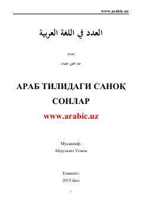

ATArab tilidagi sanoq sonlar va ularning grammatik qoidalari haqida qo'llanma.
Ushbu kitob arab tilidagi sanoq sonlar va ularning ishlatilish qoidalariga bag'ishlangan bo'lib, tolibi илмlar va o'qituvchilar uchun mo'ljallangan. Unda "ahkomul 'adad val ma'dud" mavzusi batafsil yoritilib, misollar va qoidalar orqali tushuntirib berilgan.